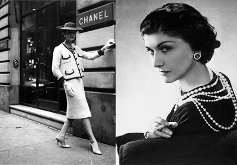

<div class="row">
<div class="col-md-12 profil">
<link rel="stylesheet" type="text/css" href="assets/css/styleprofil.css">

  
     <br><strong><h2>Coco Chanel</h2></strong> <br>
      <br>

<strong>Lahir</strong> : 19 Agustus 1883, Saumur, Perancis<br>
<strong>Meninggal</strong> : 10 Januari 1971, Hôtel Ritz Paris, Paris, Perancis<br>
<strong>Ditampilkan di</strong> : Museum Kota New York, Metropolitan Museum of Art<br><br>
<strong>Nama lengkap</strong> : Gabrielle Bonheur Chanel<br>
<strong>Pendidikan</strong> : Catholic Monastery in Aubazine<br>
<strong>Buku</strong> : Czar Chanel, Für immer Coco: Facetten einer Ikone<br><br><br>

<strong><h2>Sejarah berdirinya Chanel</h2></strong><br>

<p style= "text-indent: 0.5in">Chanel didirikan oleh Gabrielle 'Coco' Chanel. Dia membuka toko pertama nya, 'Chanel mode' (Chanel mode) pada tahun 1910 di 21 rue Cambon di Paris. Ini adalah terutama kedai millinery, dan aktris Perancis terkenal waktu segera berbondong-bondong untuk membeli kreasi nya.</p>

<p style= "text-indent: 0.5in">Pada tahun 1913, Coco membuka butik baru di Deauville dan baris dari olahraga jersey terbukti menjadi sebuah hit instan. Itu mengubah cara bahwa perempuan merasa tentang pakaian dan gaya hidup mereka, terlalu. Beliau telah memimpin revolusi mengabaikan korset ketat dan ketat waktu demi kenyamanan dan kasual elegan. Keberhasilan ini membawa kepada pembukaan pertama Chanel Couture rumah pada tahun 1915, di Biarritz. Coco adalah sekarang salah satu desainer paling populer di Paris.</p>

<p style= "text-indent: 0.5in">1921 melihat pembukaan kantor baru lain untuk bisnis, kali ini di 31 rue Cambon. Itu adalah di sini bahwa Coco meluncurkan parfum nya sekarang terkenal di dunia, nomor 5. Ini diikuti, pada tahun 1924, pendirian 'Societe des Parfums Chanel' untuk menghasilkan, mempromosikan dan menjual produk kecantikan berbagai Chanel pertumbuhan dan parfum. Coco juga ditugaskan untuk merancang kostum untuk Jean Cocteau dan Darius Milhaud balet, 'Le Train Bleu', yang dilakukan oleh Diaghlev's balet Russes di teater de Champs Elysees. Saat ini, rentang perhiasan kostum pertama juga diluncurkan.</p>

<p style= "text-indent: 0.5in">Yang pertama dari Chanel di potongan-potongan parfum original carolina herrera yang paling terkenal pakaian, 'little black dress', diperkenalkan pada tahun 1926. Majalah mode, 'Vogue', diumumkan sebagai 'seragam baru wanita modern' dan setara masih tetap menjadi andalan koleksi banyak wanita hari ini. Setelah mengunjungi Skotlandia, Coco mulai menggunakan wol pada tahun 1928 dan dibuat pakaian wol nya pertama.</p>

<p style= "text-indent: 0.5in">Pada tahun 1955, Chanel diperkenalkan dengan keharuman pertama untuk pria, tuangkan Homme. Pada tahun yang sama tas bahu berlapis mengambil desain yang masih digunakan hari ini. Coco dianugerahi Fashion Oscar pada tahun 1957 sebagai desainer paling berpengaruh dari abad ke-20; judul kaya dia pantas. Tidak buruk prestasi untuk seorang gadis yang telah lahir bagian dari sebuah keluarga dari enam anak kemiskinan yang tertimpa keluarga Perancis.</p>

<p style= "text-indent: 0.5in">Gabrielle Chanel meninggal pada 10 Januari 1971. Namun, House of Chanel terus menikmati kesuksesan internasional. Ini telah menjadi, baru-baru ini, di bawah kendali Karl Lagerfeld, yang diangkat 'Art Director' pada tahun 1983. Dari titik ini, Chanel akan mencakup berbagai macam gaya yang berbeda dan visi, tapi klasik Coco masih tetap best seller.</p>
 


  </div>